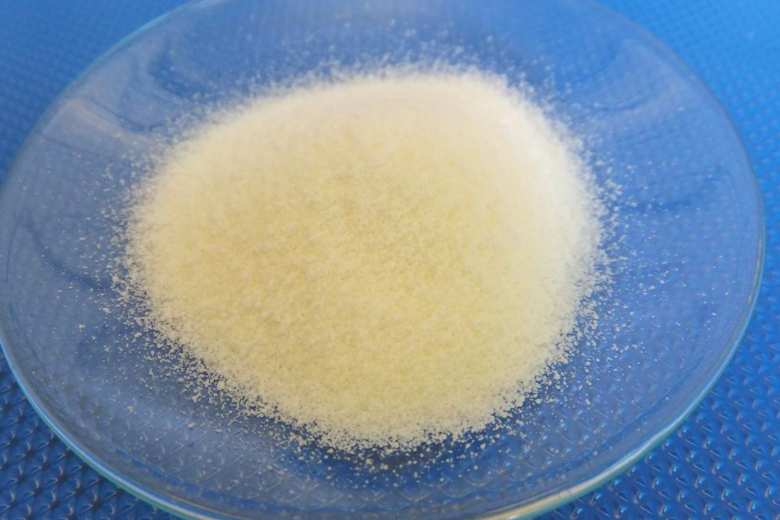

Fakta om Alkohol, Svavelsyra och salt
Alkohol
Etanol (även etylalkohol) är det som i dagligt tal kallas "alkohol", med den kemiska formeln C2H5OH.
Stearinsyra
Stearinsyra eller oktadekansyra (CH3(CH2)>16COOH eller C17H35COOH) är en mättad fettsyra med 18 kolatomer. Salter och estrar av stearinsyra får suffixet stearat. Stearinsyra ingår tillsammans med palmitinsyra i stearin, som används för ljustillverkning.
Salt
Natriumklorid, koksalt eller (vardagligt) enbart salt[1] är ett kemiskt salt med formeln NaCl.